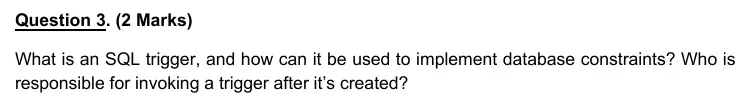
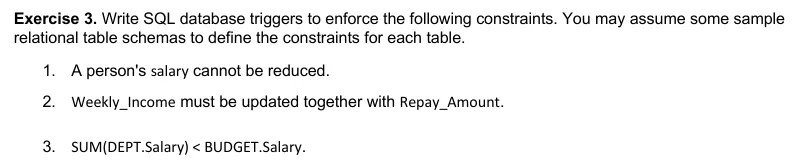
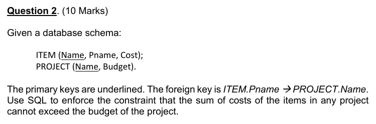

第 9 章 · WEEK 4 · DATABASE CONSTRAINTS
Constraints 与 trigger
Week 4 整节课：各种完整性约束、外键的删除规则、用 trigger 实现动态约束。
1 Database constraint 是什么
Constraint（约束）是为了保证数据的完整性（data integrity）而定的规则：一列能取哪些值，一行必须满足什么，表和表之间要保持什么关系。
| DBMS level（low level） | Application level（high level） | |
|---|---|---|
| 管什么 | Data integrity | Business logic |
| 谁定义 | Database developer | Business analyst |
| 谁管理 | Database administrator | Application developer |
| 靠什么强制执行 | SQL 里的 CONSTRAINT、CHECK 子句和 trigger | 应用程序（JavaScript、Python 等） |
原则：完整性约束定义在数据库 schema 这一层，越低越好；业务规则定义在应用程序这一层。原因是定义在数据库里的约束由 DBMS 自动执行，所有应用程序都绕不过去。

2 Static constraint 和 Dynamic constraint
| Static constraint | Dynamic constraint | |
|---|---|---|
| 约束的是 | 数据库的状态：在数据库的整个生命期内，任何时刻的数据都必须满足 | 数据库的操作 / 状态的变化：从一个状态到下一个状态怎样变才合法 |
| 判断方法 | 只看当前这一份数据就能判断对错 | 要比较修改前和修改后，或者要看操作发生的时间、方式 |
| 例子 | 主键、外键（referential integrity）、NOT NULL、取值范围、枚举值 | 状态转移（Single → Married → Divorced）、只读或可读写、和时间有关的规则 |
| 怎么实现 | CREATE TABLE 里的声明、CHECK | Trigger |
课件第 12 页的课堂练习
| 约束 | 类型 | 理由 |
|---|---|---|
| 1. A person's Salary cannot be reduced | Dynamic | 要比较旧值和新值 |
| 2. Weekly_Income must be updated together with the Repay_Amount | Dynamic | 约束的是“更新”这个操作 |
| 3. Expire_Date > Issue_Date | Static | 同一行里两个值的关系，看当前数据就能判断 |
| 4. Deposit 只能在周一到周五 12–3 pm 进行 | Dynamic | 约束的是操作发生的时间 |
| 5. SUM(DEPT.Salary) < BUDGET.Salary | Static | 看当前数据就能判断；但它跨多行、多表，用普通的列约束表达不了 |
说明课件只列了这五条让大家判断，没有给出文字答案，上表是我按第 6 页的定义做的分类。Tutorial 4 Exercise 3 里第 1、2、5 条都是用 trigger 实现的。
细化讲解
Static constraint 的细分（课件第 7–8 页）
- Referential integrity：外键。被引用的行被删除或修改时有几种处理：cascade、isolated、restricted（见第 4 节）。
- Domain constraints（业务规则）：枚举值（car IN ('Y', 'N', 'X')）、范围（age 在 18 到 75 之间）、相关联的 domain。
约束可以作用在四个层次：基本数据类型、单个 attribute、单张表、整个 schema（多张表）。
3 在 SQL 里声明约束
五种基本约束：
| 约束 | 含义 |
|---|---|
NOT NULL | 这一列不能是空值 |
UNIQUE | 这一列（或几列的组合）的值不能重复 |
PRIMARY KEY | 主键：唯一并且非空（entity integrity） |
FOREIGN KEY | 外键：值必须在被引用的表里存在（referential integrity） |
CHECK | 每一行都必须满足的条件 |
CREATE TABLE student (
sno CHAR(8) NOT NULL,
name CHAR(40) NOT NULL,
supervisor CHAR(8) NOT NULL DEFAULT '99999999',
PRIMARY KEY (sno),
FOREIGN KEY (supervisor) REFERENCES staff(id)
ON UPDATE CASCADE
ON DELETE SET DEFAULT );
约束可以起名字，之后才能单独删除或启用、停用它：
CREATE TABLE products (
product_no integer,
name text,
price numeric CONSTRAINT positive_price CHECK (price > 0) );
ALTER TABLE MovieStar ADD CONSTRAINT CarLover CHECK (car IN ('Y', 'N', 'X'));
ALTER TABLE MovieStar DROP CONSTRAINT CarLover;
约束存放在 data dictionary（system catalog）里。要修改一个约束，只能先 DROP 再 ADD。
细化讲解
CREATE DOMAIN 可以定义一个带约束的数据类型，然后在多张表里用：
CREATE DOMAIN e_age AS INTEGER CHECK (e_age >= 18 AND e_age <= 75);
4 外键：被引用的行要删除时怎么办
Works.did 是指向 Dept.did 的外键。用户要删除一个 Dept，而 Works 里还有行引用它。官方答案（Tutorial 4 Exercise 2 A）给出四种选择：
| 选项 | 做法 | SQL 写法 |
|---|---|---|
| Cascade | 把引用它的 Works 行也一起删掉 | ON DELETE CASCADE |
| Restrict | 只要还有 Works 行引用它，就不允许删除 | ON DELETE RESTRICT 或 NO ACTION（默认） |
| Set default | 把引用它的 Works 行的 did 改成某个默认部门 | ON DELETE SET DEFAULT |
| Set null | 把引用它的 Works 行的 did 设为 NULL | ON DELETE SET NULL |
选哪种取决于含义。Tutorial 4 的官方答案里：Works 引用 Emp 和 Dept 用 ON DELETE CASCADE（员工或部门没了，这条工作记录也没有意义了）；Dept.managerid 引用 Emp 用 ON DELETE SET NULL（经理离职了，部门还在，只是暂时没有经理）。
注意 SET NULL 不能用在主键的组成部分上：Works 的主键是 (eid, did)，did 不能为 NULL，所以题目说“假设忽略主键约束”才列了这个选项。
例题：Tutorial 4 Exercise 1（判断违反了哪种约束）
对教材的 COMPANY 数据库做 11 个操作，判断每个操作违反了什么约束（题目和数据库在 Tut04-Constraints-2026.pdf 第 1–2 页）。三种会被违反的约束：
- Key constraint：主键值重复。
- Entity integrity：主键（或它的一部分）为 NULL。
- Referential integrity：外键的值在被引用的表里不存在；或者删除了还被别人引用的行。
官方答案Tutorial 4 Exercise 1 Solution（原文在第 4 页，这里译述）
| 操作 | 结论 |
|---|---|
| A. 插入员工 Robert Scott，Dno = 1，SuperSSN = 888665555 | 没有违反 |
| B. 插入 PROJECT <'ProductA', 4, 'Bellaire', 2> | 违反 referential integrity：DNUM = 2，但没有 DNUMBER = 2 的部门 |
| C. 插入 DEPARTMENT <'Production', 4, '943775543', …> | 违反 key constraint（已经有 DNUMBER = 4）；也违反 referential integrity（没有 SSN = 943775543 的员工） |
| D. 插入 WORKS_ON <'677678989', null, '40.0'> | 违反 entity integrity（PNO 是主键的一部分，为 null）；也违反 referential integrity（没有这个 SSN 的员工） |
| E. 插入 DEPENDENT <'453453453', 'John', …> | 没有违反 |
| F. 删除 ESSN = 333445555 的 WORKS_ON 行 | 没有违反（没有别的表引用 WORKS_ON） |
| G. 删除 SSN = 987654321 的员工 | 违反 referential integrity：WORKS_ON、DEPENDENT、DEPARTMENT、EMPLOYEE 里都有行引用他 |
| H. 删除 PNAME = 'ProductX' 的项目 | 违反 referential integrity：WORKS_ON 里有两行引用它 |
| I. 把部门 5 的 MGRSSN 改成 123456789 | 没有违反（这个员工存在） |
| J. 把员工 999887777 的 SUPERSSN 改成 943775543 | 违反 referential integrity：没有这个 SSN 的员工 |
| K. 把一条 WORKS_ON 的 HOURS 改成 5.0 | 没有违反 |
讲解：检查的顺序：插入时先看主键（重复吗、为空吗），再逐个看外键的值存不存在；删除时看有没有别的行引用它；修改时两头都看。
细化讲解
Tutorial 4 Exercise 2：建表语句
官方答案（第 5 页）：
CREATE TABLE Emp (eid INTEGER, ename CHAR(10), age INTEGER, salary REAL,
PRIMARY KEY (eid));
CREATE TABLE Dept (did INTEGER, dname CHAR(10), budget REAL, managerid INTEGER,
PRIMARY KEY (did),
FOREIGN KEY (managerid) REFERENCES Emp,
ON DELETE SET NULL);
CREATE TABLE Works (eid INTEGER, did INTEGER, pcttime INTEGER,
PRIMARY KEY (eid, did),
FOREIGN KEY (did) REFERENCES Dept,
FOREIGN KEY (eid) REFERENCES Emp,
ON DELETE CASCADE);
- C. 保证每个部门都有经理：把 managerid 声明成
INTEGER NOT NULL（这时就不能再用 ON DELETE SET NULL）。 - D. 删除 Toy 部门时发生什么：先在 Dept 里找到 dname = 'Toy' 的行并删除；因为 Works.did 上有 ON DELETE CASCADE，再用它的 did 到 Works 里找出所有匹配的行，一并删除。
- E. 保证每个员工工资至少 10,000：在 Emp 的定义里加
CHECK (salary >= 10000)。
说明官方答案里 ON DELETE … 前面多了一个逗号；标准 SQL 里它应该直接跟在对应的 FOREIGN KEY … REFERENCES … 后面，不加逗号。
5 Trigger
Trigger：和某张表上的某些事件绑定在一起的一串动作，事件一发生，这些动作就自动执行。
- 模型是 ECA：Event（INSERT、UPDATE、DELETE）→ Condition（WHEN 条件）→ Action（要执行的动作）。
- Trigger 由 DBMS 调用和执行，对用户是透明的（用户不用、也不能手动去调它）。
- 用途：强制执行完整性约束和业务规则，尤其是 CHECK 表达不了的 dynamic constraint；也用来做审计（记录数据的改动）。
- 它不只是检查，还可以行动（比如自动修改别的数据、通知别人）。
CREATE TRIGGER 名字
{ BEFORE | AFTER } { INSERT | UPDATE [OF 列] | DELETE } ON 表 ← Event
FOR EACH { ROW | STATEMENT }
WHEN (条件) ← Condition
动作; ← Action
- BEFORE / AFTER：在事件之前还是之后触发。
- FOR EACH ROW（row-level）：每改一行触发一次，可以用 OLD 和 NEW 引用这一行修改前、修改后的值。
- FOR EACH STATEMENT（statement-level）：整条 SQL 语句执行完触发一次。
AI 讲解，非官方2025 Q3（2 分）：什么是 trigger，怎样用来实现约束，谁负责调用

An SQL trigger is a sequence of actions associated with certain events (INSERT, UPDATE, DELETE) on a given table; the actions are executed automatically whenever these events occur. It follows the ECA (Event-Condition-Action) model.
To implement a database constraint, a trigger is defined on the event that could violate the constraint; its condition (WHEN clause, using OLD and NEW values) checks whether the constraint is violated, and its action rejects or corrects the change, or reports it. Triggers are especially used for dynamic constraints (e.g., a salary cannot be reduced) and for constraints involving several rows or tables that a CHECK clause cannot express.
After a trigger is created, it is invoked and executed by the DBMS automatically; its execution is transparent to users.
核心例题：Tutorial 4 Exercise 3（三个 trigger）

官方答案1. A person's salary cannot be reduced
设表为 person(name, salary)。
CREATE TRIGGER CannotReduceSalary
AFTER UPDATE OF salary ON person
FOR EACH ROW
WHEN (NEW.salary < OLD.salary)
INFORM_MANAGER(name, salary);
讲解：Event 是对 salary 的 UPDATE；要比较每一行的新旧值，所以是 FOR EACH ROW；Condition 是新工资小于旧工资；Action 在这里是调用一个外部过程通知经理。如果想直接阻止降薪，可以改成 BEFORE UPDATE，在动作里把 NEW.salary 设回 OLD.salary，或者抛出错误。
官方答案2. Weekly_Income must be updated together with Repay_Amount
设表为 person(name, weekly_income, repay_amount)。假设没有给出 repay_amount 时，它是 weekly_income 的 15%。
CREATE TRIGGER UpdateWeeklyIncomeAndRepayAmountTogether
AFTER UPDATE OF weekly_income ON person
REFERRING
NEW ROW AS Newtuple
FOR EACH ROW
WHEN (Newtuple.weekly_income IS NOT NULL
AND Newtuple.repay_amount IS NULL)
UPDATE person
SET repay_amount = NEW.weekly_income * 0.15
WHERE person.name = NEW.name;
讲解：这个 trigger 的 Action 是一条 UPDATE：weekly_income 被改了而 repay_amount 没有值时，自动把 repay_amount 补上。这体现了 trigger “不只检查，还能行动”。
官方答案3. SUM(DEPT.Salary) < BUDGET.Salary
设两张表 staff(name, dname, salary) 和 dept(name, budget)，staff.dname 是指向 dept.name 的外键。约束的意思是：任何部门的员工工资总和不能超过该部门的预算。
CREATE TRIGGER TotalSalary
AFTER INSERT OR UPDATE OF salary ON staff
FOR EACH STATEMENT
WHEN
(EXISTS (SELECT *
FROM dept
WHERE name = NEW.dname
AND budget < (SELECT sum(salary)
FROM staff
WHERE dname = NEW.dname)
)
)
INFORM_MANAGER(NEW.dname, NEW.name, NEW.salary);
讲解：可能破坏约束的事件是往 staff 里插入新员工，或者修改工资。条件是一个子查询：这个部门的预算小于该部门现在的工资总和。这个约束跨两张表、还要求和，CHECK 做不到，所以用 trigger。
真题：2023 Q2（10 分）

AI 讲解，非官方2023 Q2：照 Tutorial 4 Exercise 3 第 3 题改
这道题和上面的第 3 题是同一个结构：staff 换成 ITEM，dept 换成 PROJECT，salary 换成 Cost，dname 换成 Pname。
CREATE TRIGGER TotalCost
AFTER INSERT OR UPDATE OF Cost ON ITEM
FOR EACH ROW
WHEN
(EXISTS (SELECT *
FROM PROJECT
WHERE Name = NEW.Pname
AND Budget < (SELECT SUM(Cost)
FROM ITEM
WHERE Pname = NEW.Pname)
)
)
INFORM_MANAGER(NEW.Pname, NEW.Name, NEW.Cost);
10 分的题，除了代码，建议再写几句说明：
The constraint involves two tables and an aggregate (SUM), so it cannot be expressed by a column or tuple-level CHECK; a trigger is used. Event: an INSERT into ITEM or an UPDATE of ITEM.Cost (these may increase the total cost of a project). Condition: the budget of the project that the new item belongs to is less than the sum of the costs of all its items. Action: the violation is reported (or the change is rejected / rolled back).
没把握的地方没有官方答案。三点说明：① 官方的 tutorial 答案用的是 FOR EACH STATEMENT 同时又引用了 NEW；严格的 SQL 里只有 row-level trigger 才能用 NEW，所以我这里写成 FOR EACH ROW。照 tutorial 原样写 FOR EACH STATEMENT 也应该被接受。② 把 PROJECT.Budget 改小也可能破坏约束，完整的方案还需要在 PROJECT 上再建一个 AFTER UPDATE OF Budget 的 trigger。③ 标准 SQL 还有 CREATE ASSERTION 可以直接表达这种约束，但课件没有讲，多数 DBMS 也不支持，不建议作为主要答案。
细化讲解
课件的两个 trigger 例子（第 25–26 页，Oracle 语法）
例 1：一个 supervisor 最多指导 5 个学生。这一页是代码截图，见上面的课件图。思路和 2023 Q2 相同：在学生表上建 trigger，插入或修改 supervisor 时，数一数这个 supervisor 名下的学生，超过 5 个就报错。
例 2：插入或修改学生姓名时，自动把每个单词的首字母变成大写、其余变成小写。
CREATE TRIGGER scott.stu_conv_nm BEFORE INSERT OR UPDATE OF student_name ON scott.students FOR EACH ROW BEGIN :NEW.student_name := INITCAP(:NEW.student_name); END;
这是 BEFORE trigger 的典型用法：在数据写进去之前先修改它。Oracle 里新值写作 :NEW。
说明课件原文把函数名印成了 INITCASP，Oracle 里这个函数叫 INITCAP。
6 用 CHECK 写约束
只涉及同一行里的值的 static constraint，用 CHECK 最简单。
官方答案Tutorial 4 Exercise 4 的第 1、2 问
1. 保证每个员工工资至少 10,000：
CREATE TABLE Emp ( eid INTEGER, ename CHAR(10), age INTEGER, salary REAL, PRIMARY KEY (eid), CHECK (salary >= 10000));
2. 保证所有经理的年龄大于 30：
CREATE TABLE Dept (
did INTEGER,
budget REAL,
managerid INTEGER,
PRIMARY KEY (did),
FOREIGN KEY (managerid) REFERENCES Emp,
CHECK (30 < ALL (SELECT E.age
FROM Emp E, Dept D
WHERE E.eid = D.managerid)));
讲解：第 2 问的约束涉及另一张表（年龄在 Emp 里），所以 CHECK 里用了子查询：所有经理的年龄组成的集合里，每一个都要大于 30。很多 DBMS 不支持 CHECK 里写子查询，实际中这种约束更常用 trigger 实现。
细化讲解
Tutorial 4 Exercise 4 第 3 问：删除工资超过自己某个部门经理的员工
官方答案（第 7 页）先假设 Works 的外键带 ON DELETE CASCADE、Dept.managerid 带 ON DELETE SET NULL，这样删除 Emp 的行之后，Works 里的相关记录自动删除，被删的人如果是经理，对应部门的 managerid 自动变成 NULL，所有完整性约束仍然满足。官方给的最终语句：
DELETE
FROM Emp E
WHERE E.salary > ANY
( SELECT E2.salary
FROM Work W, Dept D, Emp E2
WHERE W.did = D.did
AND D.managerid = E2.eid
AND W.eid = E.eid );
讲解：子查询找出“E 这个员工所在的各个部门的经理的工资”；> ANY 表示比其中至少一个高。关键是子查询里的 W.eid = E.eid，它把范围限定在 E 自己工作的部门。官方答案先给了一个没有这个限定的版本，并指出它是错的：它会删掉工资高于任何经理的员工。
7 约束的管理：启用、停用和延迟检查
| 状态 | 新数据 | 表里已有的数据 |
|---|---|---|
DISABLE | 不检查 | 可能不满足约束 |
ENABLE NOVALIDATE（PostgreSQL 里是 NOT VALID） | 检查 | 不检查，可能有不合法的旧数据。快，不需要锁表 |
ENABLE VALIDATE | 检查 | 全部检查，保证都满足。要扫描整张表并锁表 |
为什么要停用约束？
- 批量导入数据（bulk load）之前，尤其是有自引用外键的表，例如 EMPLOYEE(EmpNo, …, SupEmpNo)：导入时上司那一行可能还没导进来。导完再启用。
- 要停用被引用的主键，必须先停用引用它的外键；或者用 CASCADE 一起停用：
ALTER TABLE scott.students DISABLE CONSTRAINT stu_pk CASCADE;
Trigger 也可以停用和启用：ALTER TRIGGER 名字 DISABLE; 停用一个；ALTER TABLE 表 ENABLE ALL TRIGGERS; 启用表上所有的。
什么时候检查（SET CONSTRAINTS）：
- IMMEDIATE：每条语句结束时检查。
- DEFERRED：推迟到事务 commit 时才检查。适合事务中间暂时不满足约束、最后会满足的情况（例如两张表互相引用，要先后各插入一行）。
8 进阶变式题
SQL 语句没法用本站的程序验证。下面的答案是照 Tutorial 4 的官方答案改写的，都标为非官方，每题写明了是从哪一题改的。
变式 1 状态只能往前走
表 orders(oid, status_no)，status_no 是 1 到 4 的整数（1 = placed，2 = paid，3 = shipped，4 = delivered）。写一个 trigger：订单状态不能倒退。
AI 讲解，非官方变式 1
CREATE TRIGGER StatusCannotGoBack
AFTER UPDATE OF status_no ON orders
FOR EACH ROW
WHEN (NEW.status_no < OLD.status_no)
INFORM_MANAGER(oid, status_no);
从 Tutorial 4 Exercise 3 第 1 题（工资不能降）改来，只换了表名和列名。这是 dynamic constraint（状态转移），必须比较 OLD 和 NEW。“status_no 只能是 1 到 4”则是 static constraint，用 CHECK (status_no BETWEEN 1 AND 4) 就够了。
变式 2 人数上限
表 enrol(sid, cid) 和 course(cid, capacity)，enrol.cid 是指向 course.cid 的外键。用 trigger 保证：每门课的选课人数不超过它的 capacity。
AI 讲解，非官方变式 2
CREATE TRIGGER CourseCapacity
AFTER INSERT OR UPDATE OF cid ON enrol
FOR EACH ROW
WHEN
(EXISTS (SELECT *
FROM course
WHERE cid = NEW.cid
AND capacity < (SELECT COUNT(*)
FROM enrol
WHERE cid = NEW.cid)
)
)
INFORM_MANAGER(NEW.cid, NEW.sid);
从第 3 题（工资总和不超过预算）改来：SUM(salary) 换成 COUNT(*)，budget 换成 capacity。这也是课件第 25 页“supervisor 最多指导 5 个学生”的同一类。
细化讲解
变式 3 选外键的删除规则
book(isbn, title)，member(mid, name)，loan(mid, isbn, due)。loan 的主键是 (mid, isbn)，两个外键分别指向 member 和 book。要求：(a) 会员注销时，他的借阅记录一起删除；(b) 一本书只要还有人借着，就不允许从 book 里删除。写出 loan 的建表语句。
AI 讲解，非官方变式 3
CREATE TABLE loan ( mid INTEGER, isbn CHAR(13), due DATE, PRIMARY KEY (mid, isbn), FOREIGN KEY (mid) REFERENCES member ON DELETE CASCADE, FOREIGN KEY (isbn) REFERENCES book ON DELETE RESTRICT );
(a) 是 cascade，(b) 是 restrict。这里两个外键都不能用 SET NULL，因为 mid 和 isbn 都是主键的一部分，不能为空。从 Tutorial 4 Exercise 2 的四个选项改来。
切换到“细化讲解”可以看到变式 3、建表语句的官方答案和课件的 trigger 例子。
9 本章小结
- 低层的约束保护数据库的完整性，高层的约束保护应用的业务逻辑。
- Static constraint 规定数据库在整个生命期内的合法状态；dynamic constraint 规定状态变化时的合法操作。
- 约束用 CREATE TABLE、ALTER TABLE、CREATE TRIGGER 声明。
- Trigger 是 Event-Condition-Action，由 DBMS 自动调用。
- 约束可以启用、停用，检查可以是 immediate 或 deferred。
10 小测
键盘：← → 在小节之间翻页。